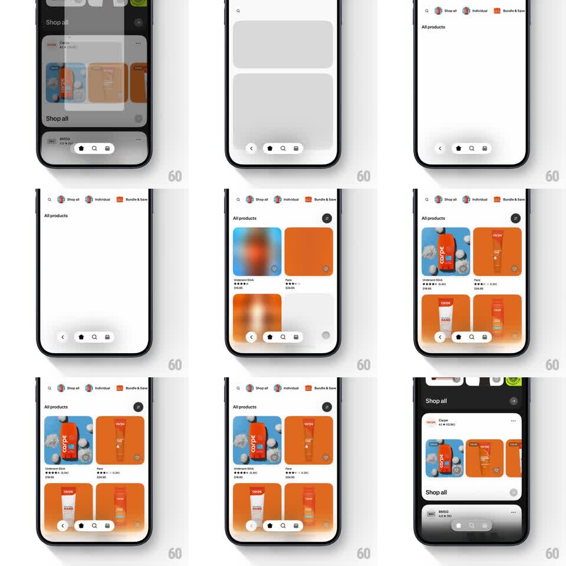

Media
Frame-by-frame

Rebuild this interaction 1:1: Shop's back navigation - the product grid slides off to the right while the parent collections screen parallax-shifts into place from a dimmed, slightly offset state.

Rebuild this interaction 1:1: Shop's back navigation - the product grid slides off to the right while the parent collections screen parallax-shifts into place from a dimmed, slightly offset state. ## Integration Integration: stack-agnostic spec - springs given as stiffness/damping, timed motions as duration + curve; map every value to your framework and animation library of choice. ## Scene Shop app: the child screen - "All products" grid of orange/blue product cards with a floating pill bottom nav (back, home, search, bag); the parent screen - "Shop all" collections list with brand cards (carpe, IMSO) and a dark hero band at the top. ## Motion spec Pattern: slide-right pop with parent parallax reveal. - The child screen translates right 0 -> 100% over 300ms (ease-out), keeping full opacity; its bottom nav pill rides with it. - The parent underneath starts 15% translated right and dimmed to 70%, and eases to 0% and full brightness over the same 300ms - the classic iOS parallax, but subtle. - The child's content has a slight internal lag: its product grid shifts an extra 8px right relative to the screen chrome during the first half, then catches up - a jelly-ish depth cue. - Interactive: an edge-swipe back gesture scrubs both screens 1:1; release past 40% completes the pop (250ms), below it springs back (~300/20). - The parent's bottom nav is shared chrome: it crossfades between the two screens' pill variants during the middle 150ms. ## Calibration - The parallax offset is small - 15%, not a third of the screen; the parent should feel parked, not distant. - Product cards keep their shadows through the slide - the child reads as a physical card leaving. ## Reduced motion Child fades out (200ms) as the parent fades to full (200ms). ## Don't miss - The child's top category pills (Shop all / Individual / Bundle & Save) slide with it - they're content, not chrome. - The parent's dim lifts fully only when the child is 90% gone - brightness lags position slightly.